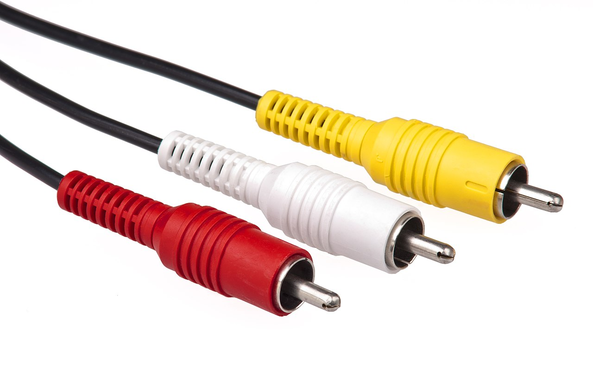
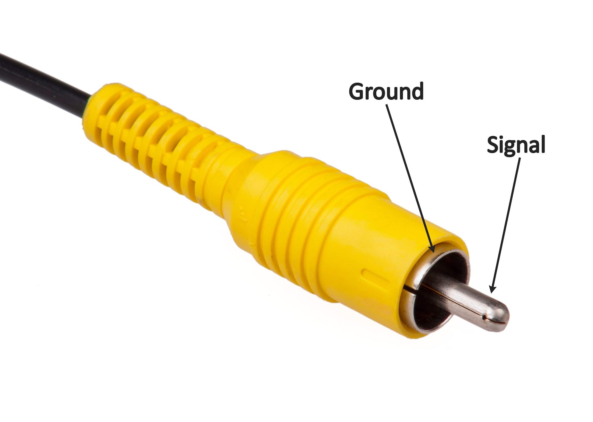
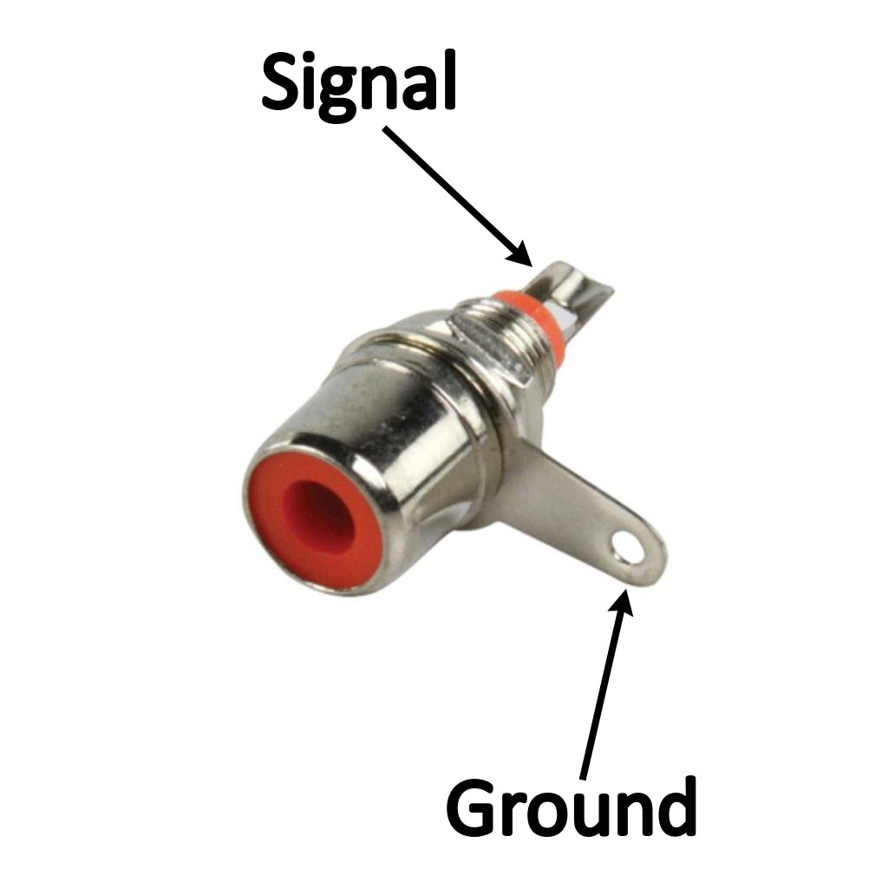
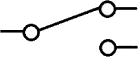
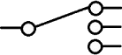
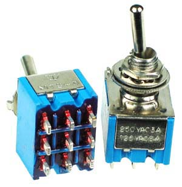
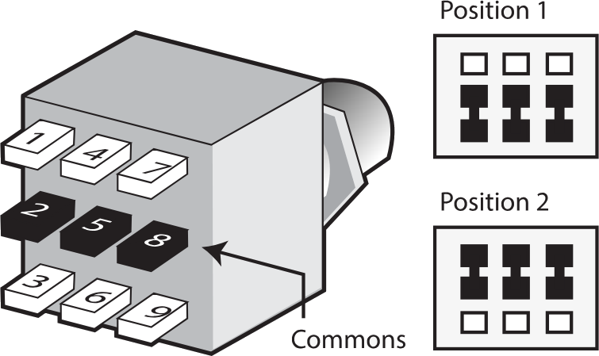
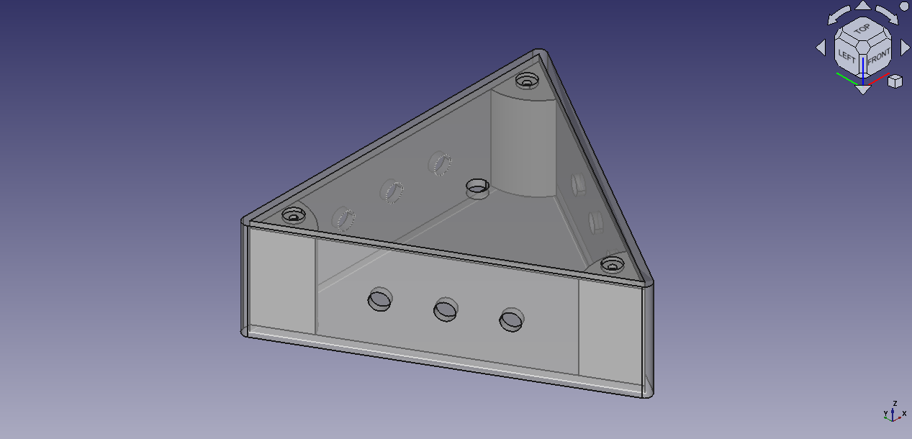
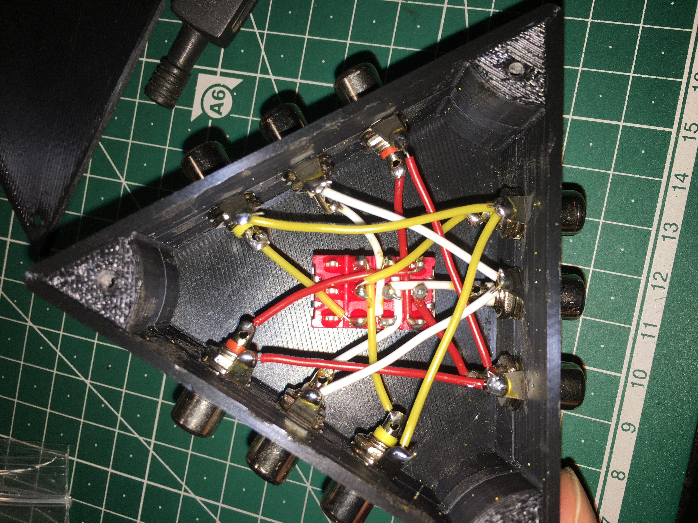
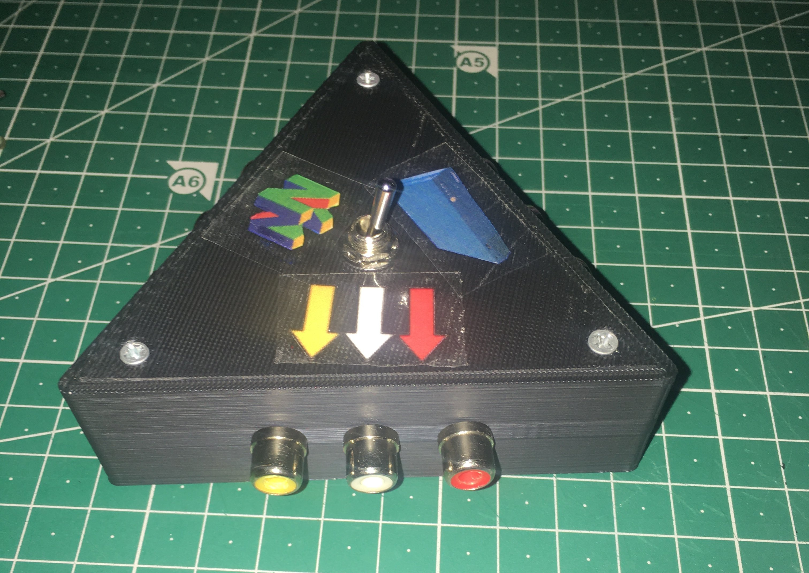

Building an RCA Switch Box
Published: October 21, 2024
Tags: CAD, Soldering
If you've read my previous blog posts, you would know that I have a CRT TV on my desk, next to my main PC monitor. I originally brought this old Grundig TV over to my room so that I could connect my Nintendo 64 to it, as the N64 only comes with AV (RCA) output. Eventually though, I bought a cheap HDMI to AV conversion box, and thus I also had the ability to use the CRT as a second monitor for my PC. Now, I don't really recommend using a CRT as a second monitor, because you will not have a very fun time trying to read text on it. But if your intention is to use your second monitor mainly for watching videos on it, then it will work perfectly. The issue with my particular CRT is that it only has one external SCART input, but I have two things that I would like to connect to it at the same time.
Enter the switch box:
 An example of an AV switch box, this particular one takes in three inputs.
Image sourced from here.
An example of an AV switch box, this particular one takes in three inputs.
Image sourced from here.
The concept is pretty simple: You plug multiple different signal sources into the box, and you use the switch on the top of the box to select which input gets outputted. This saves you the trouble of having to repeatedly connect and disconnect cables.
I looked around for switch boxes, and I saw that they were available for around 10 euro. I mean, I could get it for cheaper on sites which don't stress about selling questionable products, but I don't like to puchase from them... I thought "hey, a thing like this seems really easy to build, I bet I could put one together for cheap".
It's a pretty easy project, but I was surprised by the lack of information on how to build one (likely because you won't see many people using RCA in this day and age). So let's get to it! First, an explanation of the basic components we'll need.
RCA/AV Cables and How They Work
RCA cables are called such because they were created by the Radio Corporation of America in the 1930s, but they are also reffered to as AV cables (Audio/Video) or erroneously as Composite cables.
 The three colored cables that make up the RCA standard. Image sourced from here.
{kind=link}
There's three cables that make up the RCA standard: A yellow video signal cable (AKA the composite cable, called such because all video signal data is put in one cable (as opposed to the component cables which split video into three different cables)), a white left audio channel cable, and a red right audio channel cable. Typically, the order of these cables (from left to right) is yellow, white, red. The connector end of the cable has a pointy bit which carries the data, and a metal shield around it which acts as ground.
 A diagram of the different parts of the RCA cable. Original image sourced from here.
{kind=link}
On the opposite end, you have the female plug of the cable. This will have a piece of metal that sticks out the butt end (which the pointy bit touches), and an extra piece of metal that sticks out perpendicular to the plug, it touches the entire metal enclosure and thus acts as our ground.
 A diagram of the different parts of the plug end. Original image sourced from here.
That's all there really is to it, the RCA standard is pretty simple.
How Switches Work
You might be thinking "wait, do I really need to be told how switches work? You push to one side and it turns on, push it to the other and it turns off.". Well, that's true, but that's for the basic type of switch, which won't do much for us in this situation. That type of switch is for turning stuff on and off, rather, we want to switch between signals at the flick of the switch.
A typical on/off switch is known as a "single pole, single throw" (SPST) switch:
While a switch that toggles between two states is known as a "single pole, double throw" (SPDT):

The "throw" means the number of outputs that switch has. So a "single pole, triple throw" (SP3T) switch would have three outputs:

Now, we can design our switch box by hooking up each video cable to the end of a SPDT switch. This would be silly though, because we'd have to flip three switches in order to fully change output sources. Rather, we need a switch that can change multiple inputs at the same time, rather than just one.
An example of such a switch is a "double pole, single throw" (DTSP) switch:

This type of switch will toggle two separate inputs on and off, hence why it's "double pole". Following the logic of the previous names, you should hopefully understand that a "double pole, double throw" (DPDT) switch is one that toggles each of the two inputs between two different outputs:
What we need for this specific project, is a "triple pole, double throw" (3PDT) switch.
If you look at a 3PDT, you might be a bit scared off by the number of legs sticking out the bottom:
 Image sourced from here.
The wiring for this is easy. Essentially, the middle prongs will be your common output, while the prongs to the left and right of them are the two separate inputs:
 Image sourced from here.
I recommend testing which is which using the continuity tester of your multimeter first, because you might get some surprises (more on this later).
You might be curious, "what if I had a ton of inputs? Say, I want to make an N64 cartridge swapper. Would I need to get a 48PDT?". Yeah, you would, but you would probably have a really hard time finding such a thing. Something like that usually ends up getting done in a microcircuit instead, you would hook up a physical SPST to the voltage of a bunch of SPDT or DPDT relays. Relays are microswitches, and come in the same variety as normal switches (SPST, DPST, etc...). The downside of this being a microcircuit is that, by virtue of it having parts that require a stable 5v input, you would need to externally power the conversion box.
Buying All the Parts
Once again, I could get everything needed for this project at a questionable online retailer, but I prefer to support businesses in my region. There's an electronics store not too far from where I live, which is where I purchase most of my electronic components and tools from. Unfortunately, while the store's website did list female RCA jacks in the three colors I needed, I was having a hard time finding a 3PDT switch in stock. And most of the other sites I searched at either did not have all the RCA jack colors I needed, or did not have enough in stock (I needed 3 of each color). I wanted to avoid having to purchase all the parts from separate stores, but it seems that I would have to bite the bullet...
Then I remembered "Wait, what if I search for a 4PDT?", and much to my surprise, those were actually in stock at my local store. So I placed the order, and in less than 24 hours I received a text telling me that the order was ready for pickup at the store.
Making a Box for the Switcher
Next, I'd need to create a box to hold all the pieces in, and so I turned to my favorite testing analogue: cardboard. I measured out an equalateral triangle with sides of length 6cm, and a height of 2cm, and then I cut and glued together my pepakura masterpiece. The model taught me two things:
- 6cm isn't enough, as the outer RCA jacks would overlap with one another.
- 2cm, while enough, runs the risk of everything being too compact once the wires are soldered in.
So I decided to increase the triangle by two centimeters, and the height by one. I then used FreeCAD to model out the box:

The box has a top and bottom lid, both of which are to be screwed in place. The holes for the RCA plugs are 1.5cm apart from one another, and the entire box has 2mm of thickness.
The idea was that I could 3D print the box in order have something a bit more custom, as opposed to buying a plastic project box and drilling some holes in it. I looked around for 3D printing services (since I don't own one) and found someone nearby who prints models. I got my model the next day.
{kind=link}
The printed model, unfortunately, wasn't perfect. 3D printing isn't really a super accurate medium, and so I had to spend an afternoon sanding the parts and drilling in wider holes in the material (because the originals were slightly smaller than the spec). I also should have designed the top and bottom cover with a milimeter gap between the walls, as they were an incredibly tight fit, but I was expecting to have to sand some stuff anyway...
I opted to use a Dremel for the main plug holes, because I was afraid that the drill would crack the plastic due to the distance of the holes from one another. This turned out to be a bit more of a pain than I expected, because the Dremel wouldn't actually sand the material all that well. Rather, it would heat up the plastic and melt it. It never actually melted the box more than I would've liked, but it did make cleanup a bit more frustrating as I had to spend time cutting away bits of melted plastic and then sanding it smooth. For the top and bottom lid (as well as the screw supports inside the box), I drilled instead, which was definitely faster than using the Dremel.
Putting Everything Together
With the box working properly and all the bits test fitted, I screwed the plugs and switch to their respective locations, tightened the washers on the opposite side of all the parts, and bent the ground leads on the plugs. The plugs especially need really tight washers, because it's very easy to twist and turn the RCA plugs as you try to pull them out. Tightening those washers will prevent the plugs from rotating inside the box, which could break off the soldered wires.
Now, before you solder the data pins to the switch, it's important that you test it with the continuity tester of your multimeter to ensure the switch works as you expect. Mine didn't! I expected that pushing the switch to the left would bridge the legs on the left side of the switch with the center legs, but turns out that it actually works backwards! So I had to do a bit more wire crossing than I would have liked, but I tried to keep the pattern of how I did it consistent.
Once all the data pins were soldered onto the switch and continuity tested with the multimeter, I soldered all the grounds together to create this gore of wires:
 I fear that I could accidentally summon a demon with this thing...
In hindsight, I should have used longer wires inside the box to give them a lot more slack and prevent them from breaking off easily in the case that the plug gets twisted, but since this is only a product for me I'll just simply be careful with how I pull out the jacks.
Time to test:
All's good (there isn't even any noticably added noise to the signal!), so I just put some stickers on it to remind me what side does what:

And that's all there is to it! As usual, you can download the CAD files for the box from here if you want to build your own.